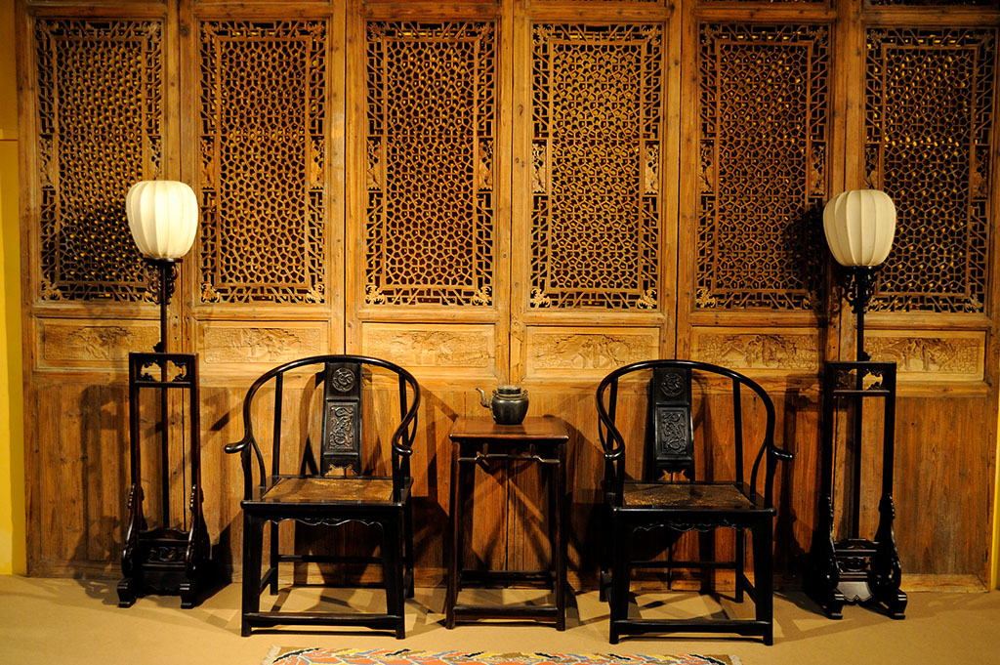
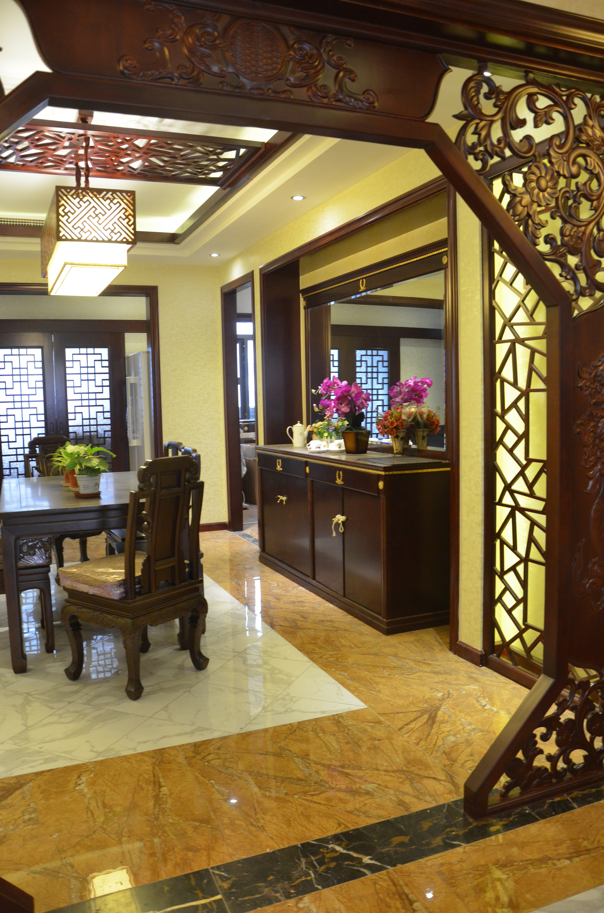
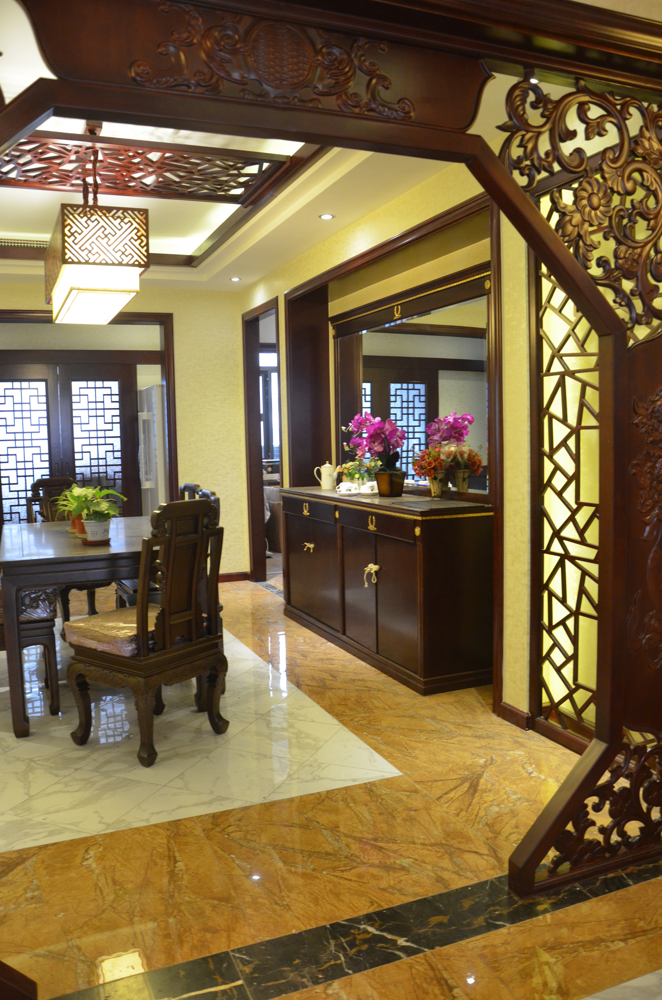

基本简介
现代风格起源于1919年成立的鲍豪斯学派，该学派处于当时的历史背景，强调突破旧传统，创造新建筑，重视功能和空间组织。现代风格强调：家居装修装饰设计等各方面都要从建筑设计出发，影响到城市建设规划、环境设计、家具设计与摆设、工业产品的设计等，是一场对先前设计表现形式的革命与运动。现代风格家居设计彰显个性，具有浓郁现代感，现代风格家居设计的特色是，其设计的元素、材料都很单一，这种设计风格已经成为越来越多时尚潮人装修的首选,现代风格家居设计从整体到局部、从空间到室内陈设塑造，精雕细琢，给人一丝不苟的印象。

 

装饰原理
淡米色现代风格家居现代风格提出“少就是多”的装饰美学原则。所以现代风格最大特点是简洁、明了，抛弃了许多不必要的附加装饰，以平面构成、色彩构成、立体构成为基础进行设计，特别注重空间色彩以及形体变化的挖掘。
空间灵活性
现代风格追求空间的实用性和灵活性，居室空间是根据相互间的功能关系组合而成，而且功能空间相互渗透，空间的利用率达到最高。空间组织不再以房间组合为主，空间的划分也不再局限于硬质墙体，而是更注重会客、餐饮、学习、睡眠功能空间的逻辑关系。通过家具、吊顶、地面材料、陈列品甚至光线的变化来表达不同功能空间的划分，而且这种划分又随着不同的时间段表现出灵活性、兼容性和流动性。装饰材料与色彩设计为现代风格的室内效果提供了空间背景。首先，在选材上不再局限于石材、木材、面砖等天然材料，而是将选择范围扩大到金属、涂料、玻璃、塑料以及合成材料，并且夸张材料之间的结构关系，甚至将空调管道、结构构件都暴露出来，力求表现出一种完全区别于传统风格的高度技术的室内空间气氛。
基色调
以棕色系列为基调色现代风格的色彩经常以棕色系列(浅茶色、棕色、象牙色)或灰色系列(白色、灰色、黑色)等中间色为基调色。其中白色最能表现现代风格的简单，另外，黑色、银色、灰色亦能展现现代风格的明快与冷调。现代风格的另一项用色特征，就是使用非常强烈的对比色彩效果，创造出特立独行的个人风格。现代风格的居室重视个性和创造性的表现，即不主张追求高档豪华，而着力表现区别于其他住宅的东西。住宅小空间多功能是现代室内设计的重要特征。与主人兴趣爱好相关联的功能空间包括家庭视听中心、迷你酒吧、健身角、家庭电脑工作室等。这些个性化的功能空间完全可以按主人的个人喜好进行设计，从而表现出与众不同的效果。
客厅
客厅是一个散发着温馨情调和亲切气氛的地方。是一家人或亲朋好友轻松团聚的中心，更是一个享受舒适娱乐的生活空间，具有多功能综合性。 一家人可以悠闲地吃些点心水果，随意欣赏电视、影碟和音乐带来的典雅，可以与亲朋好友叙旧聊天，开心交流。 随着日益提高的生活水平，客厅的装饰，也更加注重讲究品味，强调效果。
厨房
传统的厨房，功能较为单一。进入现代社会后，厨房的空间已得到较大的扩展，包括了餐厅、甚至是起居室。功能也相对因内涵的丰富而全面化。 尤其是厨用家具外形的设计发生了根本的变化后，也让厨房成为了家居的主室。各种新颖的设备，便利了厨房的操作，更促进了厨房的现代化
卧室
作为私密空间，是一天辛劳之后的休憩之地，更是体现个人风格的典型场所。人的一生大约有1/3的时间是在卧室中度过的。卧室的装饰或浪漫、或舒适、或温情，因人各异。 卧室中的焦点是床的设计与摆放，它支配着居室陈设和空间利用的平衡，是卧室装修的关键。总的说来，对卧室的装饰应格外精心才能得到理想的效果。
色彩跳跃
现代风格家居的空间，色彩就要跳跃出来。高纯色彩的大量运用，大胆而灵活，不单是对现代风格家居的遵循，也是个性的展示。整个客厅被纯净的红色所主宰，红色的沙发，红色的背景墙，红色的地毯，张扬而不夸张。以多功能组合柜为沙发背景，组合柜上推拉门的造型滑轮，以及铝合金与钢化玻璃等材料的大量应用，都是现代风格家具的常见装饰手法，给人带来前卫、不受拘束的感觉，组合柜上造型时尚简单的饰品因其纯净的色彩亦使空间多了几分时尚元素。康耐登家具的这套红白组合的小牛皮半皮沙发，经典的色彩，恰到好处的搭配，时尚而不喧闹。红色的背景墙，以金属与玻璃为主要材质的组合柜，既可当沙发背景，也可以装饰电视背景墙，甚至可以成为书房的书架和更衣间的层架。高低组合茶几，则可以根据主人的爱好选择多种组合方式，百般变化。
简洁实用
由于线条简单、装饰元素少，现代风格家具需要完美的软装配合，才能显示出美感。例如沙发需要靠垫、餐桌需要餐桌布、床需要窗帘和床单陪衬，软装到位是现代简约风格家具装饰的关键。一张沙发一个茶几一个电视柜，简单的线条，简单的组合，再加入超现实主义的无框画，金属灯罩、个性抱枕以及玻璃杯等简单的元素，就构成一个舒适简单的客厅空间。白橡木色为主的板式家具体现一个简单明快的主题，红色皮革的沙发，在色彩上达成一个鲜明的配置，空间顿生几许明艳。亲自在沙发上小坐，置身其中去体验，你会有种来到某个铁哥们家中一样的感觉，轻松自在。
多功能
现代风格家居重视功能和空间组织，注意发挥结构构成本身的形式美，造型简洁，反对多余装饰，崇尚合理的构成工艺，尊重材料的性能，讲究材料自身的质地和色彩的配置效果，发展了非传统的以功能布局为依据的不对称的构图手法。一张沙发、一个茶几、一个酒柜的客厅却显得相当的繁华热闹。沙发对面的墙，用红砖图案的壁纸与几块原木搭建了一个壁炉景致，墙上一个层架，可以几幅风景画，一些饰品让整面墙更为生动，再加上一盆绿色植物与茶几上仙人掌花束，空间的自然感就更强烈了。宜华家具的沙发与茶几自身就具有很强的多功能性，板木结合的材质，有实木的自然朴实，亦有板式家具的简洁明快。沙发的靠背设计成栅栏似的层架，不仅造型独特，还具有一定的收纳功能。茶几中间凹陷部分用来摆放花瓶、烛台等，再也适合不过。